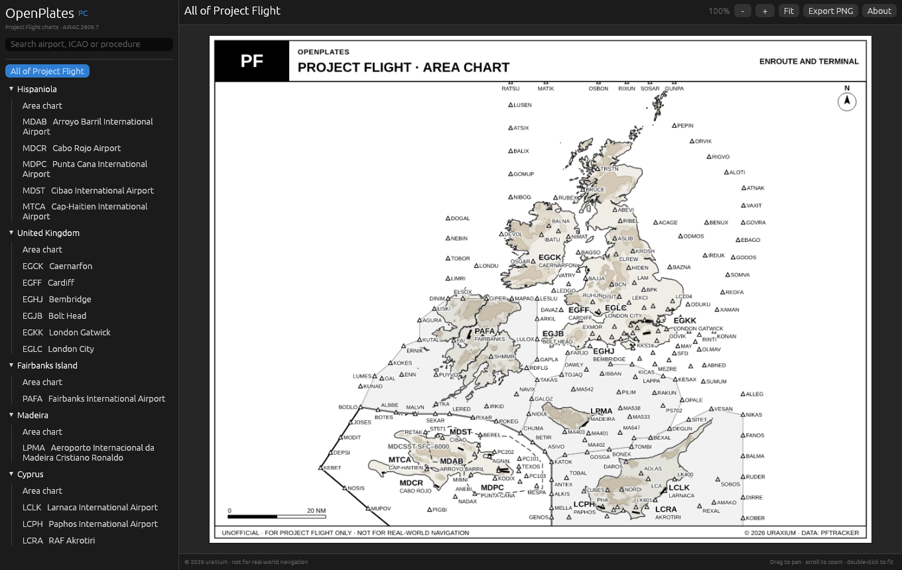
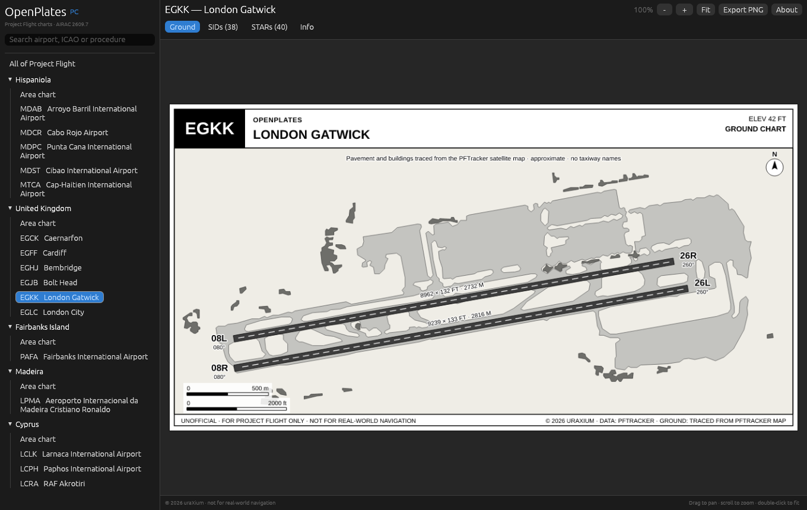
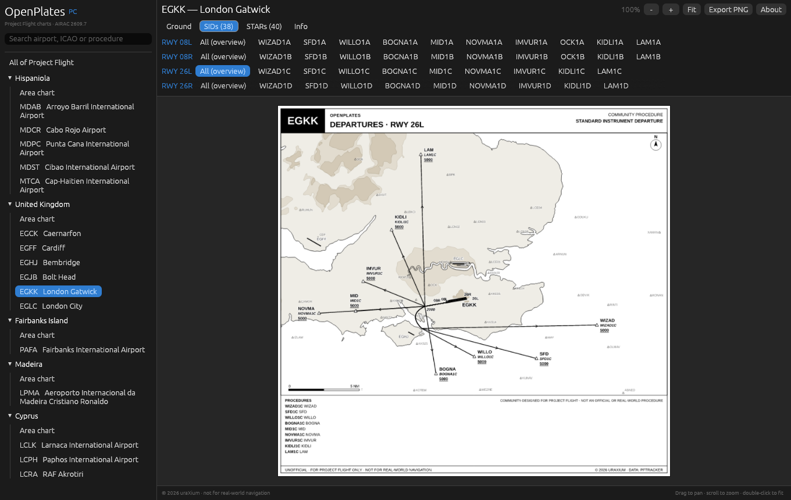
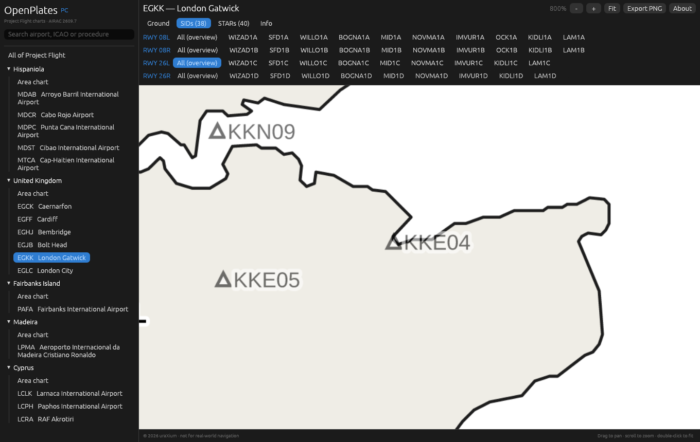
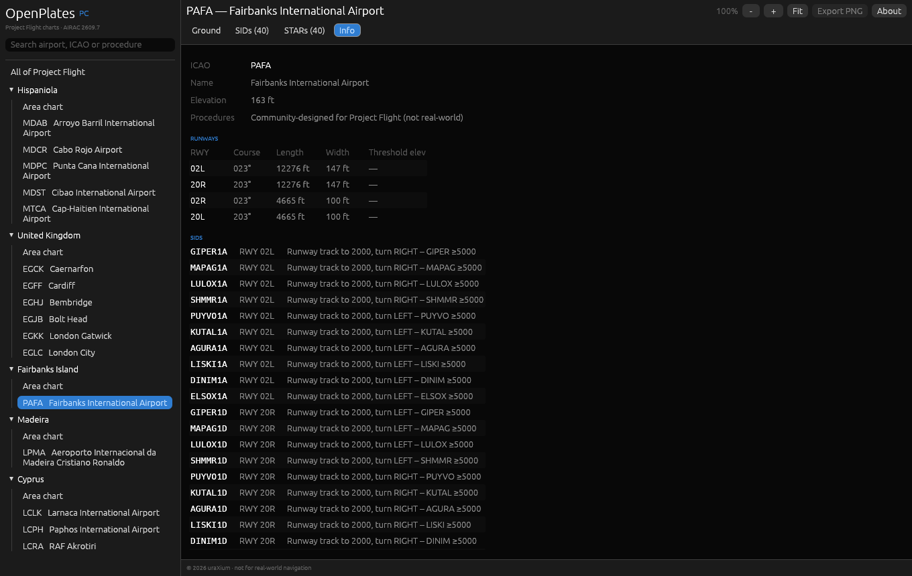

Area charts, ground charts, SIDs and STARs for every Project Flight airport, drawn the way real ones look. Islands and terrain in black and white, runways where they really are, and PFTracker waypoints throughout.

What it is
OpenPlates is a chart library for Project Flight pilots and ATC. Every chart is a clean vector drawing in the style of the real thing, so it stays sharp at any zoom and reads the way you'd expect.
Each region and the whole map, with coastlines, shaded terrain, airports and every PFTracker waypoint.
Runways with idents, headings and dimensions, plus taxiways, aprons and buildings traced from the map.
Standard departures per runway, with initial climbs, turns and altitude restrictions, plus an overview chart per runway.
Standard arrivals laid out the same way, so you can brief an arrival in seconds.
Elevation, frequencies, a runway table, and every procedure written out as text.
Save any chart as a high-resolution image for a second monitor, a tablet or a briefing.
Screenshots




How to use
Grab OpenPlates.exe from the latest GitHub release. Put it anywhere you like.
Double-click. If Windows says "Windows protected your PC", click More info → Run anyway. That shows up because the app isn't code-signed.
Choose an airport in the sidebar or search by ICAO, name or procedure. Use the tabs for Ground, SIDs, STARs and Info.
| Zoom | Mouse wheel, trackpad pinch, or + / - |
| Pan | Click and drag |
| Fit to window | Double-click, or Fit |
| Save as image | Export PNG |
| Find a procedure | Type its name in search, e.g. WIZAD |
Open source
The app is written in Rust with egui and resvg, and its source is on GitHub under the MIT license. Bug reports, ideas and pull requests are welcome.
The charts themselves are © uraXium and ship inside the official release, encrypted, so the data isn't sitting in plain view.
github.com/dev-uraXium/openplates$ git clone https://github.com/dev-uraXium/openplates $ cd openplates $ cargo build --release # src/main.rs UI # src/render.rs SVG → pixels # src/bundle.rs encrypted chart bundle
FAQ
No. OpenPlates is a fan project. It isn't affiliated with or endorsed by Project Flight or Roblox.
No. Real procedures don't fit Project Flight's compressed geography, so they're designed for Project Flight, using real fix names where those fixes exist on the map. They're marked "community procedure" on every chart.
Absolutely not. They're for simulation in Project Flight only.
You can share exported images unchanged. Modifying them or redistributing them as your own needs permission from uraXium.
Official builds are Windows-only for now. The app is cross-platform Rust, so macOS and Linux builds may come later.
Open an issue on GitHub with the airport, chart name and what's off. A screenshot helps a lot.